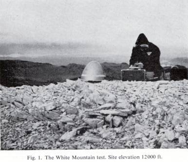
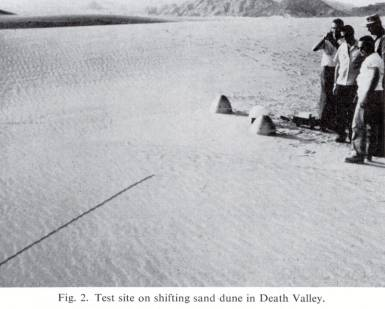
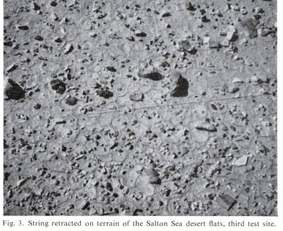
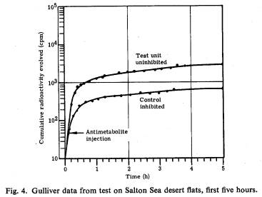
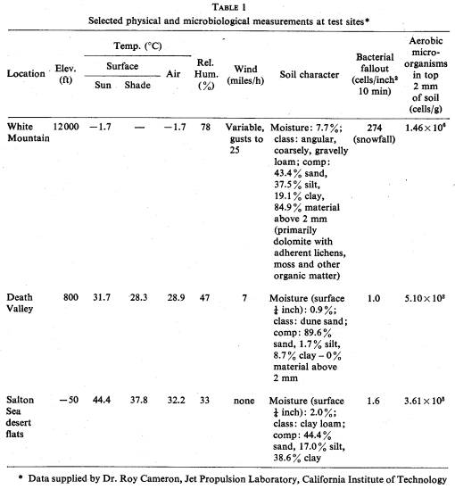
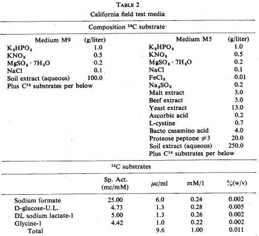
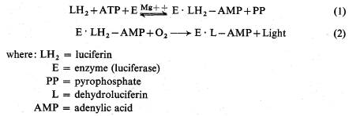
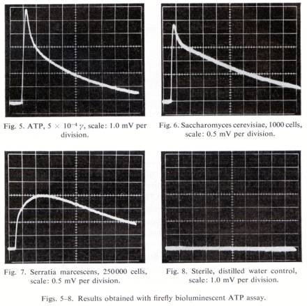
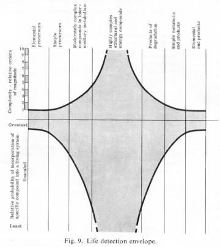
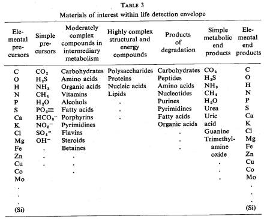

GULLIVER AND DIOGENES - EXOBIOLOGICAL
ANTITHESES
GILBERT V. LEVIN and ALLEN H. HEIM
Hazleton Laboratories, Inc. Falls church, Virginia, U.S.A.
Abstract: Gulliver field test results in extreme natural environments are presented. A proposed new exobiology experiment, based on the detection of adenosinetriphosphate (ATP), is described with laboratory results.
Significant responses were obtained from the Gulliver field tests in approximately one hour. Responses were even more pronounced when the radioactive medium was applied directly to the soil.
In the new life detection experiment, the firefly bioluminescent reaction is used to assay for micro-gamma quantities of microbial ATP, a compound ubiquitous in terrestrial life.
Gulliver and the ATP experiment, named Diogenes, represent complimentary antitheses in extraterrestrial life detection. The former is general and the latter specific. Theoretical considerations are proposed as guidelines for extraterrestrial life detection experiments.
No Russian translation of this abstract has been received.
The ability of Gulliver [1] to detect life in severe, natural environments has been rigorously field tested. For this purpose, three test sites differing sharply in climatology, geology, and pedology were selected in topographically diverse California.
The first location, the 12000 ft level of White Mountain (fig. 1), afforded a cold, rocky slope well above timberline in rarified atmosphere. Several minutes after the test began, at twilight, in subfreezing weather, a snowfall engulfed the area. In a futile effort to avoid being snowbound, the field party discontinued the test after a total elapsed period of only 50 minutes. However, this was sufficient time for the microorganisms gathered into the test unit to produce significantly more C14O2 from the labeled medium than did the antimetabolite inhibited organisms in the control unit.

After the units were cleaned and reloaded, all the components except the electronics were heat sterilized. The second field test was made on a sand dune in Death Valley (fig. 2). The sparsity of organic material in the soil and the hot, dry environment led to the selection of this site. Although the test was monitored for 24 hours the first hour was sufficient to determine the presence of microorganisms on the sand.

The third test location was the Salton Sea desert flats which provided a hot, dry, and highly saline environment (fig. 3). Salinity was particularly desired since some astronomers have speculated that the surface of Mars may be rich in salts. Again, the experiment produced positive evidence for the presence of microorganisms within one hour. The test was continued for 24 hours. Fig. 4 presents the results of the first five hours. They are typical of the data obtained at White Mountain and Death Valley. An unfavorable bias injected into the Salton Sea desert flat test is worth noting. The test and control Gulliver units fired two lines each. In the retrieval process, one line snagged on a rock and was broken. The unit thus supplied with sample by only one line was deliberately selected as the test instrument and the antimetabolite was subsequently fired into the other one. Despite the loss of sample, the test unit showed significantly higher metabolic activity than the control very shortly after the antimetabolite was injected into the latter.


A fourth field test was conducted in Virginia on a hard clay soil containing approximately 15% iron oxides, rich in limonite. While the overall environment was not as extreme as at the California test sites, the hard soil challenged the sampling system and the iron content was of interest because of the speculation concerning the concentrated presence of iron oxides, possibly limonite, on Mars. Response in this test was positive and rapid as in the other three.
Dr. Roy Cameron, soil microbiologist of the Jet Propulsion Laboratory of the California Institute of Technology, accompanied the test crew in California and made physical and microbiological measurements (table 1). The fact that responses were so readily obtained by Gulliver in the low temperature and low moisture environments is of particular interest.

The medium used in all of the automated field tests was M9. In laboratory tests performed at the California Institute of Technology on soil samples taken at each of the three California sites, medium M5 was compared to M9. The composition of the two are presented in table 2. Responses were approximately an order of magnitude higher with the M9.

In the course of the field tests, several ancillary experiments were performed which might significantly affect the design of Gulliver. One or two drops of the labeled media (M5 and M9) were directly applied to soil and rock. Planchets containing paper pads moistened with barium hydroxide solution were inverted over the spots of media and permitted to collect the C14O2 evolved for 30 minutes to one hour. Results were one or two orders of magnitude higher than those produced by the automated field instruments in a similar period. For example, one planchet inverted over two drops of M9 medium applied directly to the Death Valley sand dune collected sufficient 14CO2 within one hour to yield 40000 c/min. Differences in counting device sensitivity, geometry of presentation and self-absorption between the two systems are not sufficient to account for the increased activity obtained in the in situ tests. Disturbance of the micro-ecology of the soil, as occurs in the process of sampling, apparently has an adverse effect on metabolic activity.
For some time, this laboratory has been developing a second life detection system called Diogenes [2]. The method is based on the firefly bioluminescent reaction [3, 4, 5] and the ubiquity of adenosinetriphosphate (ATP) in terrestrial life. The light producing steps of the reaction are:

The reaction-mixture can be prepared and stabilized with all the ingredients except ATP, thereby becoming a specific, quantitative assay for ATP. No other energy-rich phosphate compound, or any other material, is known to produce a positive response. The peak amplitude of emitted light is obtained within 0.5 sec and can be used as a quantitative index for ATP, if the reactions are conducted under constant conditions. The method is as sensitive as it is rapid. Using commercially available photomultiplier tubes, amplifiers and recorders, as little as 10-7 γ of ATP has been detected.
Two instruments have been assembled in this laboratory. Each has a specially designed reaction-presentation chamber in which a cuvette, containing all the reactants except ATP, can be positioned to confront the photodetector in a light-tight box. ATP, or material suspected of containing ATP, is injected into the cuvette via syringe through a light-tight rubber plug in the reaction-presentation chamber. One of the instrument systems traces the intensity of emitted light on a strip chart recorder; the second system uses an oscilloscope to trace the emf produced by the signal from the photodetector tube. A recording of the event is made by photographing the sweep. Fig. 5 shows the standard response obtained with 5 x 10-4 γ of pure ATP. The response produced by one thousand yeast cells is shown in fig. 6. Fig. 7 shows the trace generated by the injection of 250000 Serratia marcescens cells into the reaction mixture. As few as 6000 S. marcescens cells have been detected. To maximize responses, cellular ATP is liberated by ultrasonic vibration or by chemical extraction. The almost vertical rise of the trace corresponds to the moment of injection of the ATP or cellular material. Fig. 8 shows the trace obtained when sterile, distilled water was injected as a control. In this instance, the low level of “inherent light”, found to be present in the ATP-free reaction mixture, is shown to be somewhat reduced as the result of dilution by the introduction of the water.

The sensitivity, specificity and rapidity of the test are adaptable to in-flight rocket soundings. As a result, a program has just been started to use the system to obtain microbial ATP profiles of the terrestrial atmosphere during non-recoverable rocket flights.
If such experiments can be successfully flown, the method might next be developed as an extraterrestrial life detection probe for a lander or in-flight mission. In a non-survivable capsule, the ATP experiment could provide a biological sensor for an instrument package otherwise limited to making physical determinations. The fact that the abiogenic synthesis of ATP by rather simple procedures has been reported [6] adds a note of caution to conclusions which might be drawn from the experiment since any ATP detected in this fashion might be of non-biologic origin. However, merely the presence of this important compound would have considerable biological significance. As a minimum it would establish the fact that a rather complex life precursor was available to any system that might be operating in the genesis of living material. In a surviving life detection capsule, this limitation on interpretation might be removed by sequential ATP analyses demonstrating growth or metabolism. The use of an antimetabolite, as in the case of Gulliver, would aid interpretation. Uncoupling agents to prevent phosphorylation might also be used. In an experiment continuing for several hours, a distinction between abiogenic ATP and ATP operating in a living system might be made.
In several aspects, Gulliver and Diogenes are complementary and make good companion experiments. In all of known biology, the production of CO2, or any other metabolic transformation, requires the direct or indirect mediation of ATP as an energy transfer mechanism. Thus the CO2 sought by Gulliver and the ATP sought by Diogenes are interlocking parameters in basic metabolic systems such as the Krebs cycle or the Embden-Meyerhof pathway. If life detected were similar to that on Earth, combining these two experiments would provide the redundancy desired in space experiments. If the life encountered were only partially similar to our own, the dual approach would increase the probability of a successful experiment. Another complementary aspect is that Gulliver provides for continuous, cumulative, non-destructive monitoring while Diogenes would render discrete determinations through destructive analysis. In this way, Gulliver provides continuity which Diogenes could complement with a series of independent observations. There is another, most important complementary aspect of the two experiments. An experiment seeking to detect the production of CO2 from simple precursors is fairly general, or broad. Even if extraterrestrial life is quite dissimilar from terrestrial life, it is conceivable that it would respond to Gulliver. The tri-atomic structure and molecular weight of 44 characterize CO2 as a fairly simple compound. ATP, on the other hand, merely from the point of view of its 47 atoms and molecular weight of 507, is an order of magnitude more complex. Thus, in a life system evolved independently from our own, and about which we have no prior knowledge, CO2 is more likely than ATP to fulfill a metabolic role.
A life or life-precursor system develops by incorporating functional compounds. The probability for the incorporation of a specific simple compound is much larger than that for a specific complex compound because of the greater variations in which the elements of the latter can be combined. For example, it is possible that, if an alien life requires the use of a nucleotide to take advantage of energy-rich phosphate bonding, it might utilize other phosphorylated derivatives than those of adenine. By comparison, the chance of substituting an analogue for CO2 in the course of random evolution is severely limited. Accordingly, a positive response from Diogenes would indicate a biochemistry necessarily more similar to that on Earth than would a positive response from Gulliver alone.
Although Horowitz and Miller [7] emphasize that a system must replicate, mutate, and incorporate the mutation into its progeny to be defined as living, it is unlikely that early exobiological experiments will completely satisfy these criteria. Initial experiments would be considered quite successful if they could find and identify complex organic molecules associated with life on Earth, detect material having characteristics of familiar life-associated materials, or monitor metabolism and growth. Of these indices, the observation of metabolism and growth provides the strongest evidence. They can best be monitored by observing: a) the uptake of raw materials into the system or associated increase in mass, preferably at an exponential rate; b) the transformation of these materials into one or more known or supposed life components within the system; (c) the elimination of end products from the system. A control must be incorporated into the experiment to determine whether the observed process is characteristic of life or is a simple chemical reaction. Possible approaches to the control problem include: a) the use of selected antimetabolites which would not be expected to interfere with the simple chemical reaction; b) a determination of whether the reaction follows the Q10 law in accordance with simple chemistry or whether an inhibition occurs at some temperature thus providing an analogy with the denaturation of protein; (c) a means for demonstrating that the process acts in the direction of decreased entropy.
In this context, fig. 9 was devised to provide a logical approach to the design of exobiological experiments. It presents the complexity and probability of evolutionary incorporation of specific compounds in the groups indicated. The elements and compounds have been grouped into classes according to relative complexity. For convenience, “complexity” has been defined as the number of atoms in the compounds. Obviously, complexity of a compound is determined by more than the number of its constituent atoms. The intricacy of the structure should be taken into consideration. Such consideration would always tend to increase the complexity over that assigned to an amorphous mass of atoms. On the other hand, the atoms in compounds can neither be amorphous nor assume all geometrically possible positions. To facilitate this gross approximation, comparisons of complexity have been reduced to approximate orders of magnitude as indicated in the figure. A breakdown of specific types of compounds falling into each of the classifications is presented in table 3.

The negative portion of the curve indicates relative approximate orders of magnitude for the probability that specific compounds would be incorporated into an unknown living system. No attempt will be made at this time to assign numbers or to indicate that the shape of the curve implies anything beyond the fact that it is an exaggerated reflection of the complexity curve. That is, the probability that a given compound will have been incorporated into a developing life system is considerably less than the inverse of its complexity. This becomes apparent if one considers the tremendous number of precise events which must precede the development of a macromolecule. Any of the almost infinite number of variations that might have been incorporated into the developmental process would have produced a different macromolecule than the specific one in question. This variant may have been just as complex and probable as the original macromolecule.

As shown in fig. 9, the life process takes relatively few elements and shapes and forms them through intricate metabolic pathways into a vast array of complex compounds. These, in turn, are used for continuing and extending the process. Through degradation, or byproduct production, the elements leave the living system in relatively simple compounds, or as elements. It is likely that the utilization of elements and simple compounds in any living system would be cyclical as it is on Earth. Otherwise, the depletion of available starting materials and accumulation of end products would cause the life process to cease in a relatively short course of time.
No qualifying analogy with Earth life is required in stating that it is highly probable that elements and simple compounds will be incorporated into any living system. Roughly the same high degree of probability can be applied to the production of simple end products of the system. As more complex compounds are sought, the living mechanism itself must be entered. Therefore, the probability of finding specific compounds in an alien organism decreases severely. The difficulty in establishing the presence of life through the detection of macromolecules is alleviated somewhat if the sensor mechanism can detect entire groups, such as proteins or nucleic acids, rather than a specific compound. This approach, however, cannot substantially increase the probability of detecting macromolecules in extraterrestrial life because the only models we have are Earth models produced from a single evolutionary line. Even if the biochemistry of the target planet were similar to that of the Earth, in an independent evolution the precise structure of these complicated compounds would probably differ from their Earth counterparts although the same functions were fulfilled.
Experiments which should be utilized in the early phase of extraterrestrial exploration should be those with the highest probability of determining the existence of life. These would be the experiments seeking to observe the participation of elements and simple compounds in metabolic activity. While attendant upon, and essential to, the life process, these materials can be observed without penetrating the complex labyrinth of the living mechanism. Since these experiments are centered outside of the “black box” of the living unit, relatively little can be gleaned from them concerning the biochemical details of any life detected. To examine this problem more carefully for a possible relationship with terrestrial life, the complexity curve of fig. 9 must be ascended and, correspondingly, the probability for success decreases. To ascertain that any alien life was closely related to Earth biochemistry, the life detection envelope would have to be fully explored with appropriate experiments including those for the nucleic acids. Although early exobiology capsules should be weighted strongly toward the simple compound experiments, once the existence of life has been established subsequent experiments should progress in the direction of the macromolecules.
So far, the discussion has been limited to the probability of specific compounds having been incorporated into a living system about which there is no a priori knowledge. The probability of detecting a specific compound may be considerably modified by percent abundance and distribution of the compound. For example, a highly improbable metabolic material may have been selected by the evolutionary process and produced in greater abundance than a simpler metabolic compound. This would result in a higher probability of finding the complex compound than the simple one. However, the probabilities concerning abundance and distribution are equal for all compounds selected by an alien living process. But the problem of chemical identification is more difficult for the complex compounds, a fact made very clear by the history of terrestrial chemistry and biochemistry.
The life detection envelope offers a spectrum of experiments. Those suggested by the complex compounds in the center of the curve are antithetical to those suggested at either end of the curve. Nonetheless, they are complementary. An alien life can best be detected through experiments observing the simple precursor or end products. However, elucidation of the life mechanism will depend upon observation of the participation of complex compounds in the living process.
Gulliver is an example of an experiment concerned with certain beginning and end products involved in the life process. These products are simple gases, the formation of which is not dependent upon a single metabolic pathway, but can be produced through many interacting and interrelated pathways. Diogenes, on the other hand, seeks ATP or metabolic involvement of ATP, a compound beginning the steep ascent on the complexity curve. While not diametrically opposed, as CO2 and DNA experiments would be, Gulliver and Diogenes are conceptual antitheses. A complete exobiology program will ultimately require complementary data from general and specific systems. It will also require proof of function as a part of the experiment since the mere detection of a compound is not sufficient to prove the existence of life.
Acknowledgments
The Gulliver program is being carried out with the support of the Bioscience Programs, Office of Space Sciences, National Aeronautics and Space Administration, Contract NASr-10.
Work on the development of the firefly bioluminescent assay for ATP is being supported by the Aeronomy and Meteorology Division, Goddard Space Flight Center, National Aeronautics and Space Administration, Contract NAS5-3799 and the Bureau of Naval Weapons, U.S. Navy Contract No. N 178-8097.
The participation or aid of the following persons and organizations in the California field tests of Gulliver is gratefully acknowledged: Dr. Norman H. Horowitz, Division of Biology, California Institute of Technology; Dr. Gerald A. Soffen, Jet Propulsion Laboratory, California Institute of Technology; Dr. Roy Cameron, Jet Propulsion Laboratory, California Institute of Technology; Mr. Wendell A. Carriker, Alexandria Division, American Machine and Foundry Corporation; Dr. Nello Pace, University of California, Crooked Creek Research Station.
References
1. G. V. Levin, A. H. Heim, M. F. Thompson, N. H. Horowitz and D. R. Beem, Space Research 3, ed. P. Muller (North-Holland Publ. Co., Amsterdam, 1964).
2. G. V. Levin, J. R. Clendenning, E. W. Chappelle, A. H. Heim and E. Rocek, BioSci. 14 (1964) 37.
3. W. D. McElroy, Proc. Natl. Acad. Sci. U.S. 33 (1947) 342.
4. W. D. McElroy, The Harvey Lectures, 1955-56, Ser. LI (Academic Press Inc., New York, 1957) 240.
5. B. L. Strehler and J. R. Totter, Methods of Biochemical Analysis 1 ed. D. Glick (Inter-science Publishers, Inc., New York, 1954) 341.
6. C. Ponnamperumo, C. Sagan and R. Mariner, Nature 199 (1963) 222.
7. N. H. Horowitz and S. L. Miller, Fortschr. Chem. Org. Naturstoffe 20 (1962) 423.
<< Back to Mars Research Main